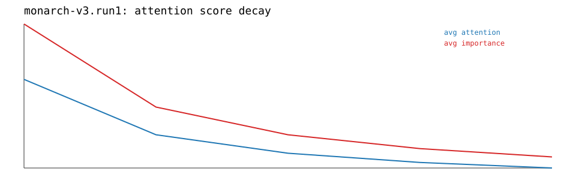
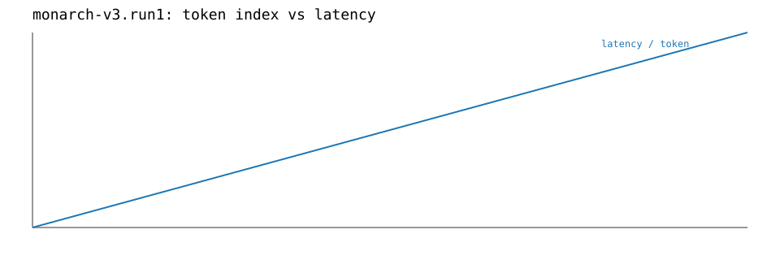
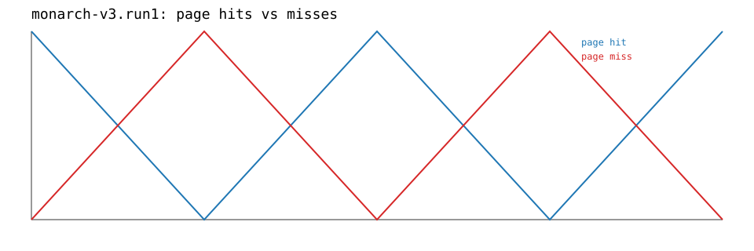

Monarch Benchmark Dashboard
Static report for standard vs paged inference, including aggregate metrics, deltas, compression mode, and per-step trace plots.
standard
| Metric | Value |
|---|---|
| peak_vram_mb | 1024.0000 |
| tokens_per_sec | 40.0000 |
monarch-v3
| Metric | Value |
|---|---|
| peak_vram_mb | 900.0000 |
| tokens_per_sec | 35.0000 |
delta
| Metric | Value |
|---|---|
| peak_vram_mb_abs | -124.0000 |
| tokens_per_sec_abs | -5.0000 |
config
compression mode: unknown
| Field | Value |
|---|---|
| mode | both |
| page_size | 16 |
| preset | fast |
trace aggregate
| Metric | Value |
|---|---|
| avg_attention_score | 0.0913 |
| avg_importance_ema | 0.1370 |
| desired_hot_tokens | 64.0000 |
| latency_per_token_ms | 30.0000 |
| page_hit_rate | 0.6000 |
| page_miss_rate | 0.4000 |
| peak_vram_mb | 517.0000 |
| promotion_frequency | 1.0000 |
| resident_hot_tokens | 80.0000 |
| retention_ratio | 0.7768 |
| steps | 5.0000 |
| tokens_per_sec | 45.6667 |


